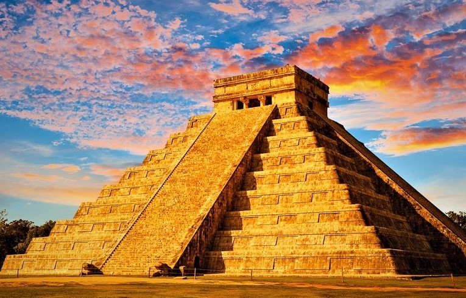

Chichén Itzá is a massive step pyramid of Mayan ruins. It is 4 square miles, meaning it takes up an area of 16 miles. It is 4th oldest of the 7 Wonders, as it was built in around 850 AD, making it 1500 years old. This pyramid is not a perfect pyramid, as some sides have steeper slopes than some other sides. It was built by the Mayan People, and is located in Mexico. It is a Mayan Ruin, with visible hieroglyphs dating from all the way back to 850 AD. Chichén Itzá gets aroun2.5 million visitors a year!
 Back! Next! Home!